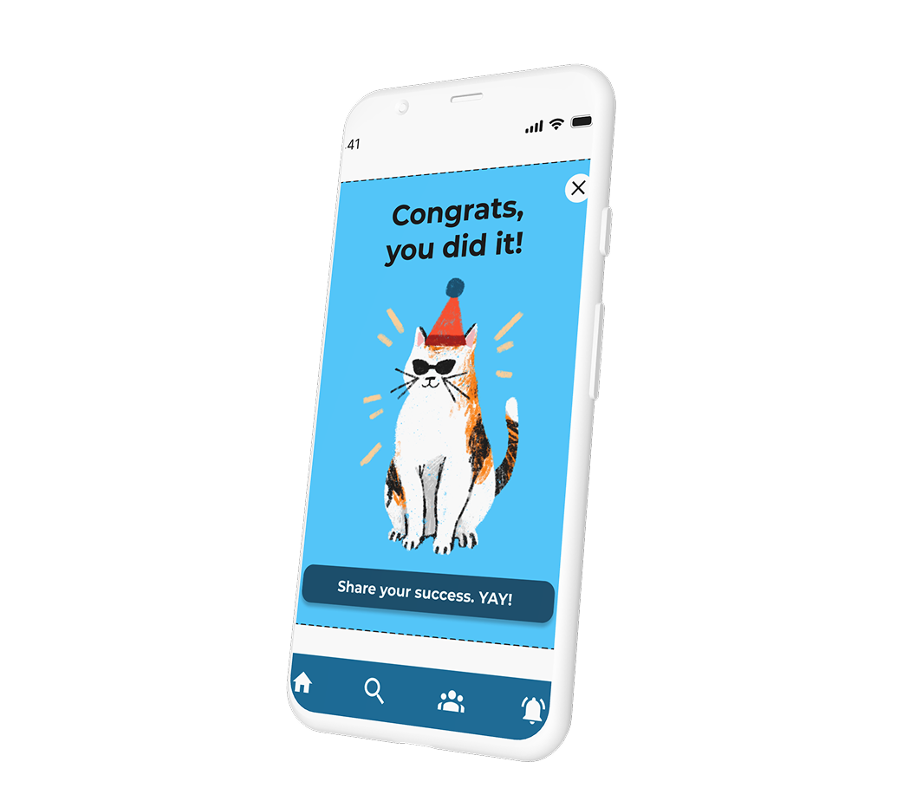
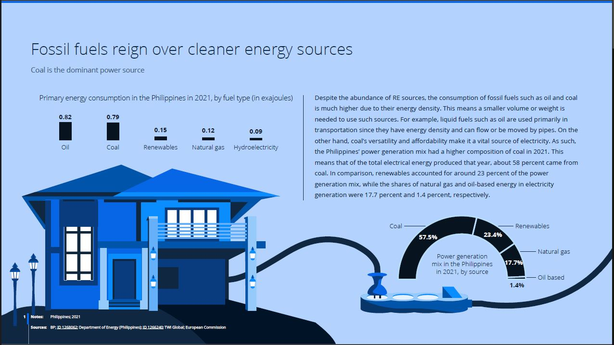

Selected Work
Projekte & Prozesse

UX Research
Product Design
Buddy First: Hobby-Vernetzung neu gedacht
Vom Research bis zur Lösungsidee: wie entsteht aus einem ersten Kontakt eine echte Verbindung?

Feature Design
Rewards Feature: Team App
Bewerbungsprojekt für eine UX-Agentur in Amsterdam.

Infographic Design
Senior Presentation Designer: Statista
Komplexe Daten in klare, zugängliche Visualisierungen übersetzen.

Visual Sketchnotes
Visual Sketchnotes: Live-Visualisierung
Ideen live festhalten als Mischung aus Zeichnungen, Symbolen und Texten.

Illustration
Kinderbuch
Wim & Frida Räbeliechtli
Bilderbuch beim Baschlin Verlag, September 2025. Vom ersten Entwurf zum fertigen Buch.